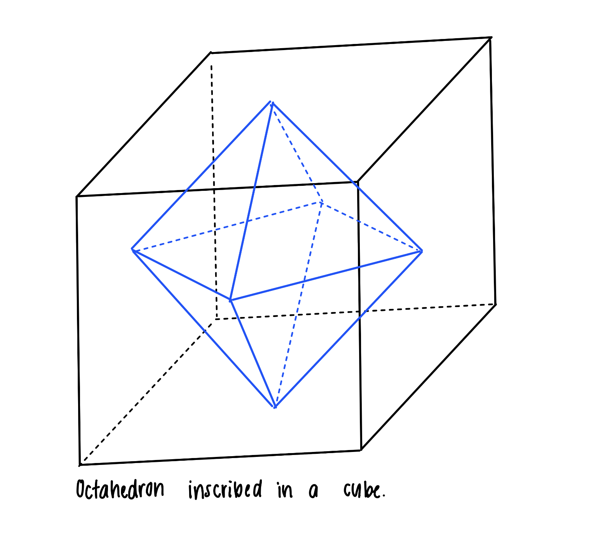

Burnside's Lemma
Introduction
While holding a blank 6-sided die in your hand, you decide to color one side a rosy pink while coloring the other 5 sides a deep navy blue. You then pick up another blank 6-sided die and try to replicate it- 1 side pink, 5 sides blue. If one were to calculate how many different ways to "make" that die with a machine, it would result in 6 different ways. However, to the human eye, we can see that it stays identical in each of those six dice that was generated by the machine. We can find the connection between the two- the machine's "6" and the human's "1"- with Burnside's Lemma.
Burnside's Lemma was actually originally discovered by Augustin-Louis Cauchy and then later rediscovered by Ferdinand Georg Frobenius. To dive in some "math lore", it is actually famously known as not Burnside's Lemma. The name itself comes from William Burnside who did credit Frobenius in his works. However, the name ended up sticking to Burnside in the end. It can be referred to as "The Lemma that is not Burnside's".
It is also often referred to as the "cheat code" to counting. With Burnside's Lemma, we can eliminate the complicated process of manually rotating certain objects to see if they match. Instead, Group Theory is used to execute the demanding portion. The Lemma provides us with a formula so that we can find the number of total unique patterns of an object by looking at how the object flips, rotates, reflects- ultimately observing its symmetry. We can also avoid the risk of accidentally overcounting which can be a very common mistake if done with more complex objects.
With the hypothetical 6-sided die dilemma, the idea of counting how many ways we can color the die can easily be visualized in our minds and also easy to create physically with our hands. However, in the natural world, it's almost never as simple and therefore, it presents significantly higher-stakes scenarios. For instance, scientists who specialize their study in how atoms and molecules, specifically in crystals, arrange themselves into specific, repetitive patterns. This experimental science is called Crystallography. Like the die, crystals are three-dimensional as well but they also have specific limitations in their symmetry classifications. In 3D space, there are exactly 32 possible combinations that these symmetries can arrange to form an infinite arrangement of a crystal lattice. These are known as the 32 Crystallographic Point Groups.
We actually see a variety of the 32 Crystallographic Groups in our everyday life. Most kitchen counters, for example, are composed of materials such as granite, marble, or stone, which fall under the 32 “symmetry recipes”. We can use Burnside’s Lemma to do the "heavy-lifting" to simplify the complexity of these groups.
Theorem: Analyzing the "Cheat Code"
To utilize this so-called “shortcut” let’s first gain a better understanding of what exactly is even “Burnside’s Lemma”. Here is the formal statement of the theorem:
Let $G$ be a finite group that acts on a set $X$. For each $g \in G$, let $X^g$ be the set of elements fixed by $g$. Then the number of orbits of $X$ is:
$$|X/G| = \frac{1}{|G|} \sum_{g \in G} |X^g|$$
-
$|X/G|$: set $X$ modulo $G$ -- The Number of Orbits: So this is essentially what we are aiming to find. To relate this back to the die example, $|X/G|$ would represent the number of true specific, unique ways to color the die. “Orbits” is the term we will use to describe the different positions the object moves as it is being rotated.
-
$|G|$: order of the group $G$ -- This represents the total number of symmetries of the group.
-
$X^g$: subset of $X$ containing elements -- "Fixed Points" : For every single movement in the group, namely ($g$), in our 6-sided cube example, we can ask how many of the colors would remain the same after performing this certain movement. And along with $\sum$, it's basically an average of "fixed points".
The bottom line is we can use Burnside’s Lemma to find the number of unique patterns that an object has because it is equivalent to the average number of fixed points of said object. Now, let's apply this to one of the members of the 32 Crystallographic Point Groups.
The Octahedral Group $O_h$ - Octahedron
The Octahedral Group and the 6-sided die actually share the exact same symmetry operations. For instance, when the die is being rotated, the octahedron “sitting” inside it is being rotated as well. This group actually has the highest level of symmetry possible in the isometric crystal system.
Before we apply the Lemma, we need to find the size of the group: $|G|$. There are 24 ways that a cube-or octahedron-can be rotated so that after each “way” it looks the same. These 24 ways are rotations across the axes through the faces, the vertices, and edges as well. This is known as the Rotational Symmetry. We would then double this number by including the point/inversion and reflections as well which would up the group order to 48. So, $|G| = 48$.
For the calculation part, we will focus on the 24 rotational symmetries rather than 48 just to keep things more clean. However, the logic remains the same if it were 48. Similar to the die dilemma, let’s figure out how many ways the 12 edges of an octahedron can be colored using $k$ different colors. It would take an unnecessary significant amount of time to test every possible color combination, so let’s instead use Burnside’s Lemma! First, we group the 24 rotation symmetries mentioned above into certain clusters. From there we can count how many edges are fixed (remain the same color) while the movement occurs. Here are the clusters:
| Rotation Cluster | Number of Symmetry Operations (Moves) - Rotation Axis | Description | Fixed Edges |
|---|---|---|---|
| Identity | 1 (only one way to get identity) | no change/movement | 12 ($k^{12}$) |
| $90^\circ$ | 6 (six ways to rotate in $90^\circ$) | rotate around center of a face | 3 orbits (top, sides, bottom) of 4 edges each (all edges within a orbit must share the same color so edges move in 3 sets of 4 ($k^3$)) |
| $180^\circ$ | 3 (three pairs of opposite sides) | half turn around the center of a face | edges move in 6 sets of 2 ($k^6$) |
| Vertex to Vertex ($120^\circ$ and $240^\circ$) | 8 (spinning cube around axis that goes from one corner to its corresponding opposite corniner -- 4 pairs of corners and 2 different angles) | rotating around opposite corners | edges move in 4 sets of 3 ($k^4$) |
| Edge to Edge | 6 (12 edges so 6 pairs of opposite edges) | rotating around the midpoints of the edge to its corresponding opposite edge | 2 edges are fixed (others move in pairs) ($k^7$) |
Now, with this we can plug back into our formula and since we are using $k$ amount of colors, we can solve this problem for any number of k we would like. It could be 2, 7, 20, or even 100 if we wanted to. This becomes the ultimate version of our cheat code and specifically for this group:
$$|X/G| = \frac{1}{24} \left( k^{12} + 6k^3 + 3k^6 + 8k^4 + 6k^7 \right)$$
Namely, if we wanted to use 2 colors like our die example, we would plug in $k=2$ so:
$$\frac{1}{24} (4096 + 48 + 192 + 128 + 768) = 218$$
This means there are 218 unique ways exactly to color the edges of an octahedron with using only 2 colors. Now imagine trying to count those by hand. That would not be so fun. However, with Burnside’s Lemma, it was practically a breeze!

Beyond: Music Theory
Although Burnside’s Lemma mainly revolves around the mathematical aspects, it actually serves as a universal “identity” detector. Let’s see how this applies in Music Theory.
We can look at counting unique chords in specific. Some basics in Music Theory are that there are 12 notes in an octave ranging in alphabetical order from A to G and that we can build a chord (triad) with 3 notes that are unique to one another (each chord has its unique 3-note combination). With basic math computations, it would suggest that there are many combinations per chord. However, musicians actually consider certain chords to be the same as one another even when the notes are rearranged (same 3 notes but just used in a different order).
The root position can be considered as the identity. For example, C Major is a chord with the notes C - E - G as its root position. Moving into its first inversion, it is now E - G - C and that is still considered as a C Major chord. And once again, the second inversion would be G - C - E, another chord also considered as a C Major chord. To a piano player, this is seen as different tones to a chord, while a mathematician may see it as how a Symmetry Group is acting upon a set of 12 notes.
We can also apply the “cheat code”- Burnside’s Lemma - to the octave. We can define the “Group” ($G$) as the different ways we can shift (transpose the notes) or flip/reflect the notes. So it represents the 12 transpositions (11 in addition to the original). Then the "Set" $X$ would be all the possible combinations of the 3 notes chosen from the 12 notes of an octave. We would then aim to find the number of unique chords possible (number of orbits) which ends up being 19 (ignoring the transpositions) – using the same averaging formula/process as the Octahedron.
Similarly to our “rotating the cube” example earlier, “shifting a chord” on the piano is mathematically identical. Thus, Burnside’s Lemma is used for more than just mathematical objects. It serves as an efficient tool to help narrow down the fundamental state of a substance, whether it be a crystal lattice, a colorful die, or maybe even a smooth piano chord. The math remains the same all around.